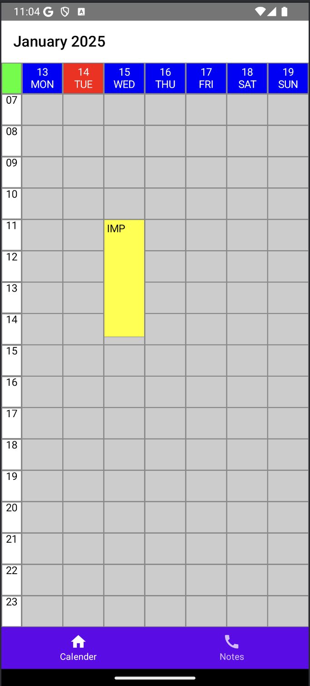
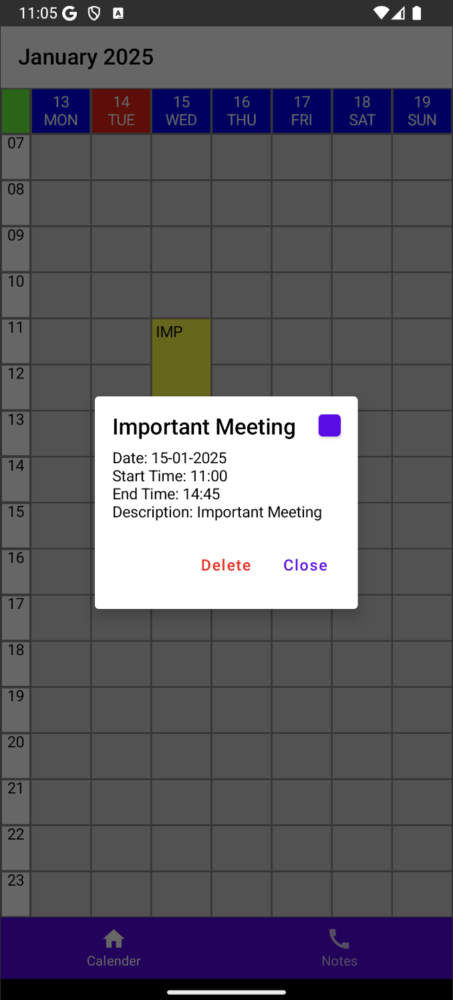
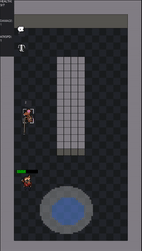
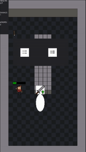
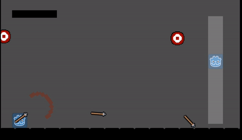
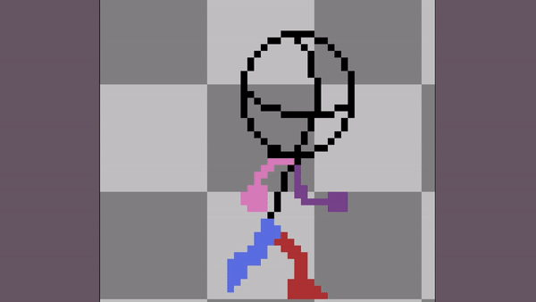

Hello! I'm Zoran Marjanovic, and this is my portfolio. I enjoy working on technical projects and learning new skills.
I started building this portfolio website to showcase my skills, projects, and growth as a developer.
As I continue working on this site, I aim to implement more advanced features over time.
So this project not only serves as a personal portfolio but also as a learning platform, where I can experiment with new web technologies and improve my coding skills over time.
I am currently building my own calendar app. Since I use an iOS device but want to learn Kotlin, I decided to explore Kotlin Multi-Platform to create a cross-platform app that works seamlessly on both iOS and Android.
 Around a year ago, I discovered 3D printing for myself and quickly became fascinated with its endless possibilities. Now, I’m diving into CAD software to design solutions for problems around my apartment. Stay tuned for my first models to be published on my Printables Page.
Currently, the page is as empty - but not for long! My creations are on their way, so check back soon for some truly mildly interesting 3D-models :)I’ve spent over 2.5 years diving into the world of software testing, where my main mission is to ensure applications. What I enjoy most about software testing is the mix of detective work and creativity—figuring out how to break things (in the best way possible!) and helping teams deliver polished, reliable applications. And whether it’s learning new tools or diving into a fresh challenge, I’m always ready to adapt and improve.
I have a background in computer science, having studied it at university, though I wasn’t able to complete my degree at the time due to circumstances that required me to start working. Despite this, my passion for technology and learning has only grown stronger over the years and im learning constantly through personal projects.
Now, with more experience and a clearer path ahead, I plan to finish my bachelor's degree in the near future.I absolutely love using the Godot Game Engine to bring my personal game ideas to life. Even if I don’t always finish my projects, each one teaches me something new and valuable.
What fascinates me about game development is how it brings together so many different elements—coding, design, storytelling, and problem-solving. It’s like a giant creative puzzle, and it perfectly matches my curious nature. Every project feels like an adventure, and I’m excited to see where my next idea will take me!Starting games? Easy. Finishing them? Well... that’s a different story. During this 72-hour Game Jam, I somehow managed to plan, prototype, program, create the art, and design the levels. It was a crash course in understanding everything that goes into making a game—and realizing that I definitely can’t do it all myself. The result? My first fully finished game.
If you enjoy frustrating level design, janky movement, and suboptimal art, you’re in luck—you can try it yourself! :)I've always been a big fan of puzzle games, and Minesweeper holds a special place in my heart — it's a game I still play almost daily. Trying to recreate it with an added dimension was both a challenge and a joy. Translating the simplicity of the original into a 3D space brought new layers of strategy and complexity, making the process just as exciting as playing the game itself!
A collection of other projects, including animations, mobile controls, and more experiments.
Mobile controls
 Procedural Generation
Animation
I’ve picked up the basics of CAD design, allowing me to create simple yet practical solutions for my household needs. It’s amazing how a few clicks and some creativity can turn an idea into a tangible object that solves everyday problems. It’s a skill I’m excited to keep building on! If you need a custom towel holder, write me!
If you'd like to get in touch, please feel free to reach out!